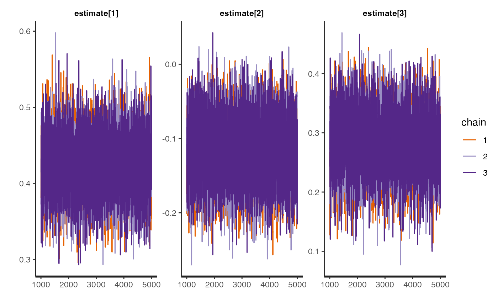

R/mvmr_ivw_stan.R
mvmr_ivw_stan.RdBayesian multivariate inverse variance weighted model with a choice of prior distributions fitted using RStan.
mvmr_ivw_stan( data, prior = 1, n.chains = 3, n.burn = 1000, n.iter = 5000, seed = 12345, ... )
| data | A data of class |
|---|---|
| prior | An integer for selecting the prior distributions;
|
| n.chains | Numeric indicating the number of chains used in the HMC estimation in rstan, the default is |
| n.burn | Numeric indicating the burn-in period of the Bayesian HMC estimation. The default is |
| n.iter | Numeric indicating the number of iterations in the Bayesian MCMC estimation. The default is |
| seed | Numeric indicating the random number seed. The default is |
| ... | Additional arguments passed through to |
An object of class stanfit.
Burgess, S., Butterworth, A., Thompson S.G. Mendelian randomization analysis with multiple genetic variants using summarized data. Genetic Epidemiology, 2013, 37, 7, 658-665 doi: 10.1002/gepi.21758 .
Stan Development Team (2020). "RStan: the R interface to Stan." R package version 2.19.3, https://mc-stan.org/.
# \donttest{ dat <- mvmr_format(rsid = dodata$rsid, xbeta = cbind(dodata$ldlcbeta,dodata$hdlcbeta,dodata$tgbeta), ybeta = dodata$chdbeta, xse = cbind(dodata$ldlcse,dodata$hdlcse,dodata$tgse), yse = dodata$chdse) mvivw_fit <- mvmr_ivw_stan(dat) print(mvivw_fit)#> Inference for Stan model: mvmrivw. #> 3 chains, each with iter=5000; warmup=1000; thin=1; #> post-warmup draws per chain=4000, total post-warmup draws=12000. #> #> mean se_mean sd 2.5% 25% 50% 75% 97.5% n_eff #> estimate[1] 0.42 0.00 0.04 0.35 0.40 0.42 0.45 0.50 6505 #> estimate[2] -0.12 0.00 0.04 -0.20 -0.15 -0.12 -0.09 -0.04 6596 #> estimate[3] 0.28 0.00 0.05 0.18 0.25 0.28 0.31 0.38 6174 #> lp__ -198.11 0.02 1.23 -201.39 -198.66 -197.78 -197.21 -196.73 4664 #> Rhat #> estimate[1] 1 #> estimate[2] 1 #> estimate[3] 1 #> lp__ 1 #> #> Samples were drawn using NUTS(diag_e) at Wed Jul 14 13:09:56 2021. #> For each parameter, n_eff is a crude measure of effective sample size, #> and Rhat is the potential scale reduction factor on split chains (at #> convergence, Rhat=1).# }